在对单周期CPU有一定了解后，现在我们来看看多周期CPU。多周期CPU指的是将整个CPU的执行过程分成几个阶段，每个阶段用一个时钟去完成，然后开始下一条指令的执行，而每种指令执行时所用的时钟数不尽相同，这就是所谓的多周期CPU。需要注意的是，在本设计中，不同指令的操作码跟单周期CPU会有所不同；指令存储器和数据存储器的存储单元是字节宽度，而不是使用32位。
MIPS32指令格式
同单周期CPU的指令格式，指令有三种类型：R型、J型、I型
多周期CPU执行的指令
算术运算指令
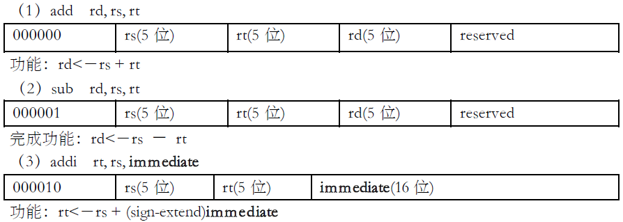
逻辑运算指令
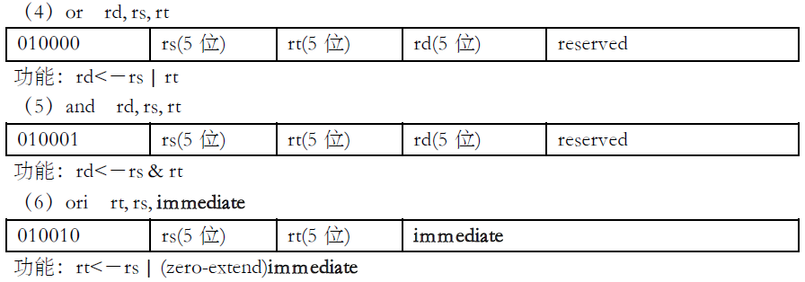
移位指令
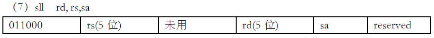
功能：rd<－rs<<(zero-extend)sa，左移sa位 ，(zero-extend)sa
传送指令
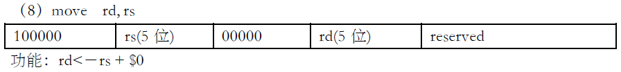
比较指令
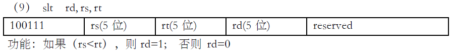
存储器读写指令
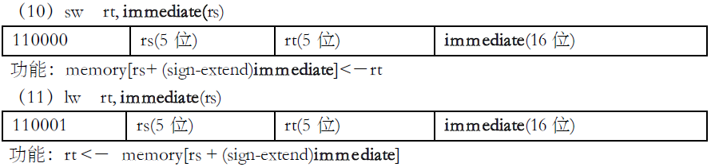
分支指令
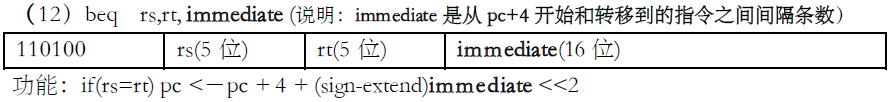
跳转指令
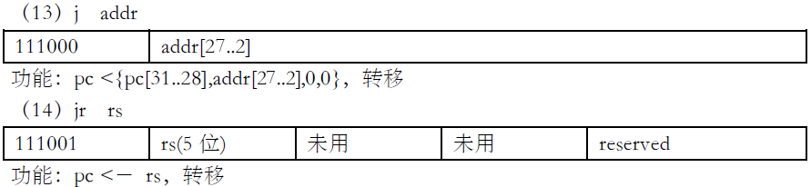
调用子程序指令
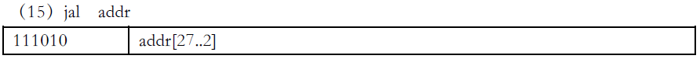
功能：调用子程序，pc <－ {pc[31..28],addr[27..2],0,0}；$31<－pc+4，返回地址设置；子程序返回，需用指令 jr $31。
停机指令
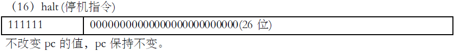
设计原理
处理过程
CPU在处理指令时，一般需要经过以下几个阶段：
- 取指令(IF)：根据程序计数器pc中的指令地址，从存储器中取出一条指令，同时，pc根据指令字长度自动递增产生下一条指令所需要的指令地址，但遇到“地址转移”指令时，则控制器把“转移地址”送入pc，当然得到的“地址”需要做些变换才送入pc。
- 指令译码(ID)：对取指令操作中得到的指令进行分析并译码，确定这条指令需要完成的操作，从而产生相应的操作控制信号，用于驱动执行状态中的各种操作。
- 指令执行(EXE)：根据指令译码得到的操作控制信号，具体地执行指令动作，然后转移到结果写回状态。
- 存储器访问(MEM)：所有需要访问存储器的操作都将在这个步骤中执行，该步骤给出存储器的数据地址，把数据写入到存储器中数据地址所指定的存储单元或者从存储器中得到数据地址单元中的数据。
结果写回(WB)：指令执行的结果或者访问存储器中得到的数据写回相应的目的寄存器中。
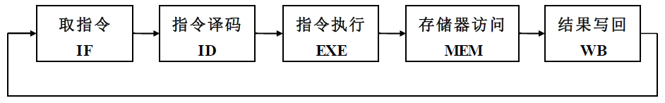
状态转移
状态的转移有的是无条件的，例如从IF状态转移到ID 和 EXE状态就是无条件的；有些是有条件的，例如ID 或 EXE状态之后不止一个状态，到底转向哪个状态由该指令功能，即指令操作码决定。每个状态代表一个时钟周期。
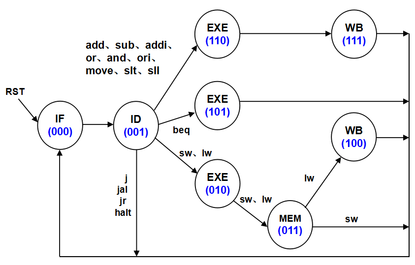
数据通路及其控制
控制部件
下图是多周期CPU控制部件的电路结构，三个D触发器用于保存当前状态，是时序逻辑电路，RST用于初始化状态“000“，另外两个部分都是组合逻辑电路，一个用于产生下一个阶段的状态，另一个用于产生每个阶段的控制信号。从图上可看出，下个状态取决于指令操作码和当前状态；而每个阶段的控制信号取决于指令操作码、当前状态和反映运算结果的状态zero标志等。
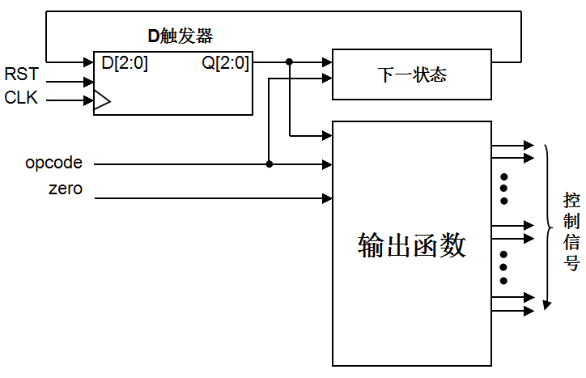
数据通路
下图是一个简单的基本上能够在单周期上完成所要求设计的指令功能的数据通路和必要的控制线路图。其中指令和数据各存储在不同存储器中，即有指令存储器和数据存储器。访问存储器时，先给出地址，然后由读/写信号控制（1-写，0-读。当然，也可以由时钟信号控制，但必须在图上画出来）。对于寄存器组，读操作时，给出寄存器地址（编号），输出端就直接输出相应数据；而在写操作时，在 WE使能信号为1时，在时钟边沿触发写入。
特别提示，图上增加IR指令寄存器，目的是使指令代码保持稳定，还有pc增加写使能控制信号pcWre，也是确保pc适时修改，原因都是和多周期工作的CPU有关。ADR、BDR、ALUout、ALUM2DR四个寄存器不需要写使能信号，其作用是切分数据通路，将大组合逻辑切分为若干个小组合逻辑，大延时变为多个分段小延时。
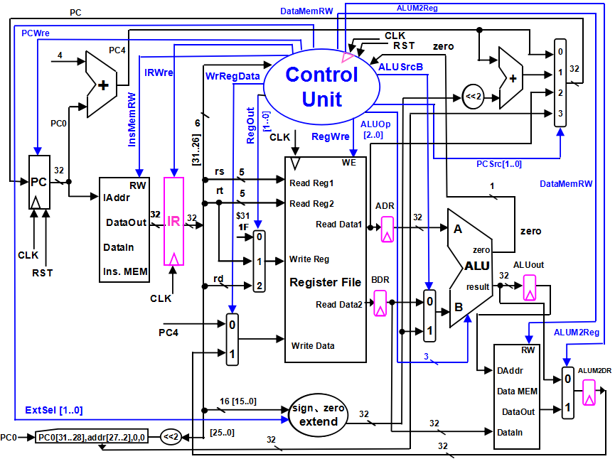
控制信号
控制信号和单周期CPU大同小异
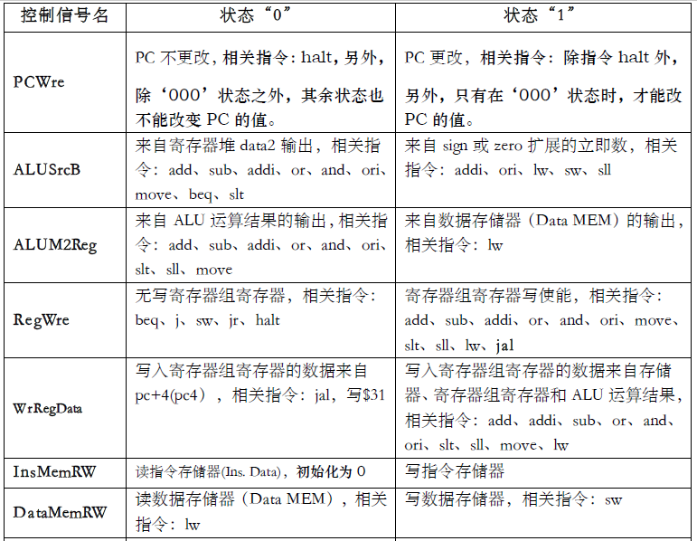
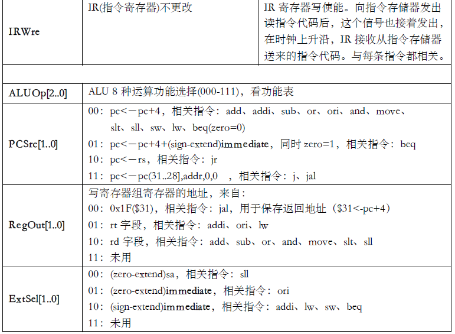
Instruction Memory：指令存储器，
- Iaddr，指令地址输入端口
- DataIn，存储器数据输入端口
- DataOut，存储器数据输出端口
- RW，指令存储器读写控制信号，为1写，为0读
- Data Memory：数据存储器，
- Daddr，数据地址输入端口
- DataIn，存储器数据输入端口
- DataOut，存储器数据输出端口
- RW，数据存储器读写控制信号，为1写，为0读
- Register File：（寄存器组）
- Read Reg1，rs寄存器地址输入端口
- Read Reg2，rt寄存器地址输入端口
- Write Reg，将数据写入的寄存器，其地址输入端口（rt、rd）
- Write Data，写入寄存器的数据输入端口
- Read Data1，rs寄存器数据输出端口
- Read Data2，rt寄存器数据输出端口
- WE，写使能信号，为1时，在时钟上升沿写入
- IR：指令寄存器，用于存放正在执行的指令代码
ALU运算功能表
ALU：
- result，ALU运算结果
- zero，运算结果标志，结果为0输出1，否则输出0
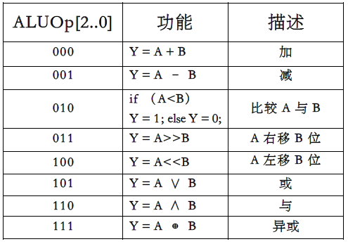
设计方法
采用模块设计的思想，设计的模块和单周期CPU的模块一样，但添加了IR模块（用于在时钟下降沿到来时将InsMem模块输出的指令传出到registerFile模块，图中用的是上升沿，但上升沿到来时CU的控制信号才发出，信号送达需要时间，因此改为下降沿），所以总共设计了InsMEM模块、ControlUnit模块、registerFile模块（ALUM2DR归入本模块，时钟上升沿到来时才将内存的数据传入本模块）、Extend模块（加入了一个功能：跳转指令执行时计算要改变的PC0的值）、ALU模块（ADR和BDR归入这个模块，时钟上升沿到来时数据才传入）、DataMEM模块（ALUOut归入本模块，时钟上升沿到来时数据才传入）、IR模块，最后设计CPU总模块，需要注意的是，PC没有独立作为一个模块，免去参数传递的麻烦，直接写在总模块中。
另外一个思路时，由于CU的控制信号很多，但是很多信号在指令执行的多个阶段中是一样的，因此在取完指令后，ID阶段就改变CU控制信号的值为正确的值，在其他的阶段，需要改变的信号再改变。
还有一点是，PC0的改变是在控制信号PCWre为1时改变的，在每条指令执行的最后阶段将控制信号PCWre改为1，这就保证执行下一条指令时，PC0已经正确改变。
IF阶段控制信号表
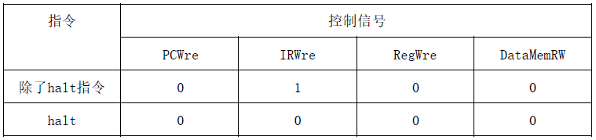
ID阶段控制信号表
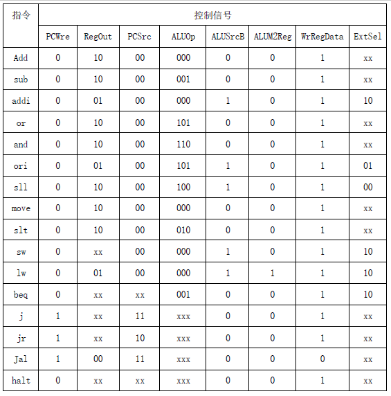
EXE阶段控制信号表
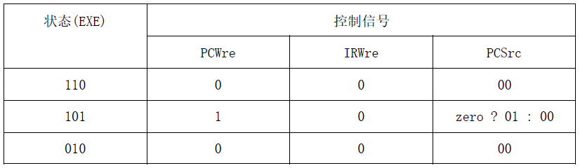
MEM阶段控制信号表
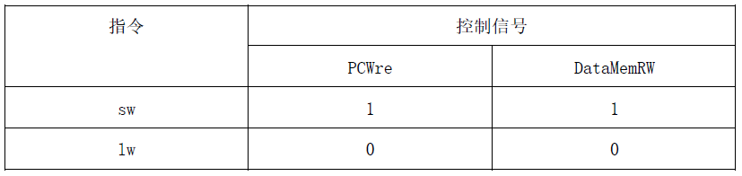
WB阶段控制信号表
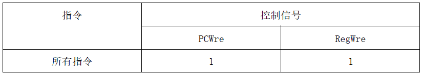
此外，jal指令也要设置RegWre = 1
InsMEM模块
把将要执行的指令my_test_rom.txt加载到储存指令的内存中。根据PC的值返回相应的指令。注意这里指令是按照字节存储的。
1 2 3 4 5 6 7 8 9 10 11 12 13 14 15 16
| module InsMEM( input [31:0] PC0, input InsMemRW, output reg [31:0] instruction ); reg [7:0] mem [0:127]; initial begin $readmemb("my_test_rom.txt", mem); end always @* begin instruction[31:0] <= {mem[PC0-8'b11111000], mem[PC0-8'b11111000+1], mem[PC0-8'b11111000+2], mem[PC0-8'b11111000+3]}; end endmodule
|
ControlUnit模块
包含两个变量state和next_state，next_state初始化为sif，控制单元根据state的不同，执行不同的操作，注意控制单元在state为ID时，根据指令的不同改变各个控制信号量的值，在其他state时，根据需要改变相应的控制信号的值，以达到正确的控制目的，记得在每个状态中，根据状态机，改变next_state的值。代码可能有点长，然后其实并不难，都是重复的代码。
1 2 3 4 5 6 7 8 9 10 11 12 13 14 15 16 17 18 19 20 21 22 23 24 25 26 27 28 29 30 31 32 33 34 35 36 37 38 39 40 41 42 43 44 45 46 47 48 49 50 51 52 53 54 55 56 57 58 59 60 61 62 63 64 65 66 67 68 69 70 71 72 73 74 75 76 77 78 79 80 81 82 83 84 85 86 87 88 89 90 91 92 93 94 95 96 97 98 99 100 101 102 103 104 105 106 107 108 109 110 111 112 113 114 115 116 117 118 119 120 121 122 123 124 125 126 127 128 129 130 131 132 133 134 135 136 137 138 139 140 141 142 143 144 145 146 147 148 149 150 151 152 153 154 155 156 157 158 159 160 161 162 163 164 165 166 167 168 169 170
| module ControlUnit( input [5:0] Opcode, input zero, input clk, output reg PCWre, output reg ALUSrcB, output reg ALUM2Reg, output reg RegWre, output reg InsMemRW, output reg IRWre, output reg DataMemRW, output reg WrRegData, output reg [1:0] ExtSel, output reg [1:0] PCSrc, output reg [1:0] RegOut, output reg [2:0] ALUOp, output reg [2:0] state ); reg [2:0] next_state; parameter ADD = 6'b000000, ADDI = 6'b000010, SUB = 6'b000001, ORI = 6'b010010, AND = 6'b010001, OR = 6'b010000, MOVE = 6'b100000, SW = 6'b110000, LW = 6'b110001, BEQ = 6'b110100, HALT = 6'b111111, SLL = 6'b011000, SLT = 6'b100111, J = 6'b111000, JR = 6'b111001, JAL = 6'b111010; parameter sif = 3'b000, sid = 3'b001, sexe1 = 3'b110, sexe2 = 3'b101, sexe3 = 3'b010, smem = 3'b011, swb1 = 3'b111, swb2 = 3'b100; initial begin next_state = sif; InsMemRW = 0; ALUSrcB = 0; ALUM2Reg = 1; WrRegData = 0; ExtSel = 0; PCSrc = 0; RegOut = 2'b10; ALUOp = 0; end always @(posedge clk) begin state <= next_state; end always @(state or zero or Opcode) begin case(state) sif: begin IRWre = 1; PCWre = 0; RegWre = 0; DataMemRW = 0; next_state = sid; end sid: begin if (Opcode == ADD || Opcode == SUB || Opcode == ADDI || Opcode == OR || Opcode == AND || Opcode == ORI || Opcode == SLL || Opcode == MOVE || Opcode == SLT) next_state = sexe1; else if (Opcode == BEQ) next_state = sexe2; else if (Opcode == SW || Opcode == LW) next_state = sexe3; else next_state = sif; WrRegData <= (Opcode == JAL) ? 0 : 1; ALUM2Reg <= (Opcode == LW) ? 1 : 0; case(Opcode) ADD: begin ALUSrcB = 0; ALUOp = 3'b000; PCSrc = 2'b00; RegOut = 2'b10; end SUB: begin ALUSrcB = 0; ALUOp = 3'b001; PCSrc = 2'b00; RegOut = 2'b10; end ADDI: begin ALUSrcB = 1; RegOut = 2'b01; ALUOp = 3'b000; PCSrc = 2'b00; ExtSel = 2'b10; end OR: begin ALUSrcB = 0; RegOut = 2'b10; ALUOp = 3'b101; PCSrc = 2'b00; end AND: begin ALUSrcB = 0; RegOut = 2'b10; ALUOp = 3'b110; PCSrc = 2'b00; end ORI: begin ALUSrcB = 1; RegOut = 2'b01; ALUOp = 3'b101; PCSrc = 2'b00; ExtSel = 2'b01; end SLL: begin ALUSrcB = 1; RegOut = 2'b10; ALUOp = 3'b100; PCSrc = 2'b00; ExtSel = 2'b00; end MOVE: begin ALUSrcB = 0; RegOut = 2'b10; ALUOp = 3'b000; PCSrc = 2'b00; end SLT: begin ALUSrcB = 0; RegOut = 2'b10; ALUOp = 3'b010; PCSrc = 2'b00; end SW: begin ALUSrcB = 1; ALUOp = 3'b000; PCSrc = 2'b00; ExtSel = 2'b10; end LW: begin ALUSrcB = 1; RegOut = 2'b01; ALUOp = 3'b000; PCSrc = 2'b00; ExtSel = 2'b10; end BEQ: begin ALUSrcB = 0; ALUOp = 3'b001; ExtSel = 2'b10; end J: begin ALUSrcB = 0; PCSrc = 2'b11; PCWre = 1; end JR: begin ALUSrcB = 0; PCSrc = 2'b10; PCWre = 1; end JAL: begin ALUSrcB = 0; RegOut = 2'b00; RegWre = 1; PCSrc = 2'b11; PCWre = 1; end HALT: begin ALUSrcB = 0; end endcase end sexe1: begin IRWre = 0; next_state = swb1; end sexe2: begin PCWre = 1; IRWre = 0; PCSrc <= (zero == 0) ? 2'b00 : 2'b01; next_state = sif; end sexe3: begin IRWre = 0; next_state = smem; end swb1: begin RegWre = 1; PCWre = 1; next_state = sif; end smem: begin if (Opcode == SW) begin PCWre = 1; DataMemRW = 1; next_state = sif; end if (Opcode == LW) begin next_state = swb2; end end swb2: begin RegWre = 1; PCWre = 1; next_state = sif; end endcase end endmodule
|
registerFile模块
申明31个寄存器并初始化为0，0号寄存器一直当做0处理；寄存器的值在这个模块中取出，同时也可以在时钟下降沿到来时向寄存器写值，由CU相应的控制信号控制，这里与图中不同，图中是上升沿，是在下个周期上升沿到来时才将值写入，我是在本周期的下降沿写入值的。还有一点，ALUM2DR归入这个模块，数据存储器的输出值write_data在时钟上升沿到来时才能传入本模块中。
1 2 3 4 5 6 7 8 9 10 11 12 13 14 15 16 17 18 19 20 21 22 23 24 25 26 27 28 29 30 31 32 33 34 35 36 37
| module registerFile( input [4:0] rs, rt, rd, input [31:0] write_data, PC4, input RegWre, clk, WrRegData, input [1:0] RegOut, output [31:0] readData1, readData2 ); wire [4:0] write_reg; assign write_reg = (RegOut == 0) ? 5'b11111 : ((RegOut == 1) ? rt : rd); reg [31:0] write_data_1; always @(posedge clk) begin write_data_1 = write_data; end wire [31:0] writedata; assign writedata = (WrRegData == 0) ? PC4 : write_data_1; reg [31:0] register [1:31]; integer i; initial begin for (i = 0; i < 32; i = i + 1) register[i] = 0; end assign readData1 = (rs == 0)? 0 : register[rs]; assign readData2 = (rt == 0)? 0 : register[rt]; always @(negedge clk) begin if ((RegWre == 1) && (write_reg != 0)) begin register[write_reg] <= writedata; end end endmodule
|
Extend模块
本模块比较简单，在单周期的基础上加入了跳转指令需要计算的PC的值；同时，在零拓展时，控制信号ExtSel的值为00时，只取imme_16的[10:6]位，拓展后这个值是供左移右移指令使用的。
1 2 3 4 5 6 7 8 9 10 11 12 13
| module Extend( input [15:0] imme_16, input [1:0] ExtSel, input [31:0] PC0, input [25:0] imme_26, output [31:0] imme_32, output [31:0] PCnew ); assign imme_32 = (ExtSel == 2'b10) ? {{16{imme_16[15]}}, imme_16[15:0]} : ((ExtSel == 2'b00) ? {{27{1'b0}}, imme_16[10:6]} : {{16{1'b0}}, imme_16[15:0]}); assign PCnew = {PC0[31:28], imme_26, 2'b00}; endmodule
|
ALU模块
根据CU发出的控制信号ALUOp的不同，ALU对传进去的值执行不同的操作。还有就是ADR和BDR归入本模块，在时钟上升沿到来时才将数据传入ALU模块。
1 2 3 4 5 6 7 8 9 10 11 12 13 14 15 16 17 18 19 20 21 22 23 24 25 26 27 28 29 30 31 32 33 34 35 36 37 38 39 40 41 42
| module ALU( input [31:0] readData1, input [31:0] readData2, input [31:0] imme_32, input ALUSrcB, input clk, input [2:0] ALUOp, output wire zero, output reg [31:0] result ); result = 0; end*/ reg [31:0] readData1_1, readData2_1; always @(posedge clk) begin readData1_1 = readData1; readData2_1 = readData2; end wire [31:0] alub; assign alub = (ALUSrcB == 0) ? readData2_1 : imme_32; always@(readData1_1 or alub or ALUOp) begin case (ALUOp) 3'b000: result <= readData1_1 + alub; 3'b001: result <= readData1_1 - alub; 3'b010: begin if (readData1_1 < alub) result <= 1; else result <= 0; end 3'b011: result <= readData1_1 >> alub; 3'b100: result <= readData1_1 << alub; 3'b101: result <= readData1_1 | alub; 3'b110: result <= readData1_1 & alub; 3'b111: result <= (readData1_1 & ~alub) | (~readData1_1 & alub); endcase end assign zero = (result == 0) ? 1 : 0; endmodule
|
DataMEM模块
数据储存在模块申请的数组当中，并根据控制信号的不同，可以存值也可以取值。BDR和ALUOut归入本模块中，以控制在时钟上升沿到来时才将数据传入。数据储存在本次多周期CPU中是按字节存储的，与单周期不同。
1 2 3 4 5 6 7 8 9 10 11 12 13 14 15 16 17 18 19 20 21 22 23 24 25 26 27 28 29 30 31 32 33 34 35 36 37 38 39 40 41
| module DataMEM( input clk, input [31:0] result, input [31:0] readData2, input DataMemRW, input ALUM2Reg, output [31:0] write_data ); reg [31:0] DAddr, DataIn; reg [31:0] DataOut; initial begin DataOut = 0; end always @(posedge clk) begin DataIn = readData2; DAddr = result; end reg [7:0] DataMem [0:511]; integer i; initial begin for (i = 0; i < 512; i = i + 1) DataMem[i] = 0; end always@(DAddr or DataMemRW) begin if (DataMemRW == 0) DataOut[31:0] = {DataMem[DAddr], DataMem[DAddr+1], DataMem[DAddr+2], DataMem[DAddr+3]}; else begin DataMem[DAddr] = DataIn[31:24]; DataMem[DAddr+1] = DataIn[23:16]; DataMem[DAddr+2] = DataIn[15:8]; DataMem[DAddr+3] = DataIn[7:0]; end end assign write_data = (ALUM2Reg == 0) ? result : DataOut; endmodule
|
IR模块
控制在时钟下降沿到来时才将指令传到registerFile模块中。同时根据控制信号的不同，可以使传出的指令保持不变或者变更为InsMEM中传过来的指令。没有其他作用，至于为什么用下降沿，前文有解释。
1 2 3 4 5 6 7 8 9 10 11 12 13 14 15 16 17 18 19
| module IR( input [31:0] instruction, input IRWre, input clk, output reg [31:0] instruction2 ); initial begin instruction2 = 0; end always @(negedge clk) begin case(IRWre) 1: instruction2 <= instruction; endcase end endmodule
|
CPU总模块
总模块中将各个模块之间的线连起来，并且将IR输出的指令拆分为几个部分，传入不同的模块；然后实例化各个模块，需要注意的是，实例化模块时，变量名和顺序一定一定要和小模块申明时相同；此外，总模块中根据具体情况改变PC的值。PC值初始化为十六进制F8，假设程序从这里开始执行。
1 2 3 4 5 6 7 8 9 10 11 12 13 14 15 16 17 18 19 20 21 22 23 24 25 26 27 28 29 30 31 32 33 34 35 36 37 38 39 40 41 42 43 44 45 46 47 48 49 50 51 52 53 54 55 56 57 58 59 60 61 62 63 64 65 66 67 68 69 70 71 72 73 74 75 76 77 78
| module CPU(); wire PCWre; wire ALUSrcB; wire ALUM2Reg; wire RegWre; wire InsMemRW; wire IRWre; wire WrRegData; wire DataMemRW; wire [1:0] ExtSel; wire [1:0] PCSrc; wire [1:0] RegOut; wire [2:0] ALUOp; reg [31:0] PC0; wire [31:0] instruction; wire [31:0] instruction2; wire [31:0] write_data; wire [31:0] PC4; wire [31:0] imme_32; wire [31:0] PCnew; wire [31:0] readData1; wire [31:0] readData2; wire zero; wire [31:0] result; wire [2:0] state; reg clk; wire [5:0] Opcode; wire [4:0] rs; wire [4:0] rt; wire [4:0] rd; wire [15:0] imme_16; wire [25:0] imme_26; assign Opcode[5:0] = instruction2[31:26]; assign rs = instruction2[25:21]; assign rt = instruction2[20:16]; assign rd = instruction2[15:11]; assign imme_16 = instruction2[15:0]; assign imme_26 = instruction2[25:0]; assign PC4 = PC0+4; initial begin PC0 = 8'b11111000; clk = 1; end always #500 clk = ~clk; InsMEM insmem(PC0, InsMemRW, instruction); ControlUnit controlunit(Opcode, zero, clk, PCWre, ALUSrcB, ALUM2Reg, RegWre, InsMemRW, IRWre, DataMemRW, WrRegData, ExtSel, PCSrc, RegOut, ALUOp, state); registerFile registerfile(rs, rt, rd, write_data, PC4, RegWre, clk, WrRegData, RegOut, readData1, readData2); Extend extend(imme_16, ExtSel, PC0, imme_26, imme_32, PCnew); ALU alu(readData1, readData2, imme_32, ALUSrcB, clk, ALUOp, zero, result); DataMEM datamem(clk, result, readData2, DataMemRW, ALUM2Reg, write_data); IR ir(instruction, IRWre, clk, instruction2); always@(posedge clk) begin if (PCWre == 1) begin if (PCSrc == 0) PC0 <= PC4; else if (PCSrc == 1) PC0 <= PC4+imme_32*4; else if (PCSrc == 2) PC0 <= readData1; else PC0 <= PCnew; end end endmodule
|
验证方法
以下表格方便大家测试。将指令写到my_test_rom.txt文件，文件放在project的根文件夹，接着仿真验证。注意指令存储是按照字存储的，8位二进制位一行。
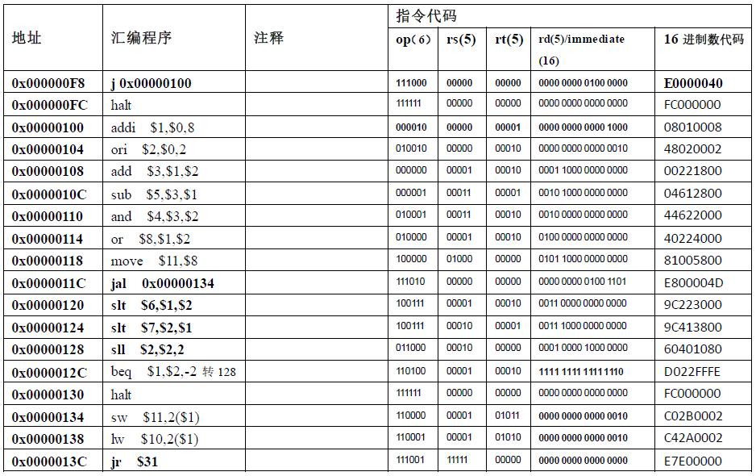